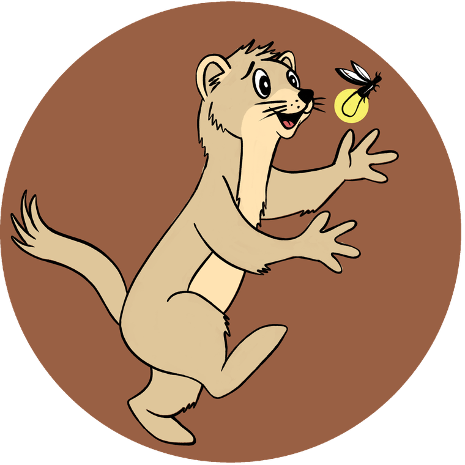
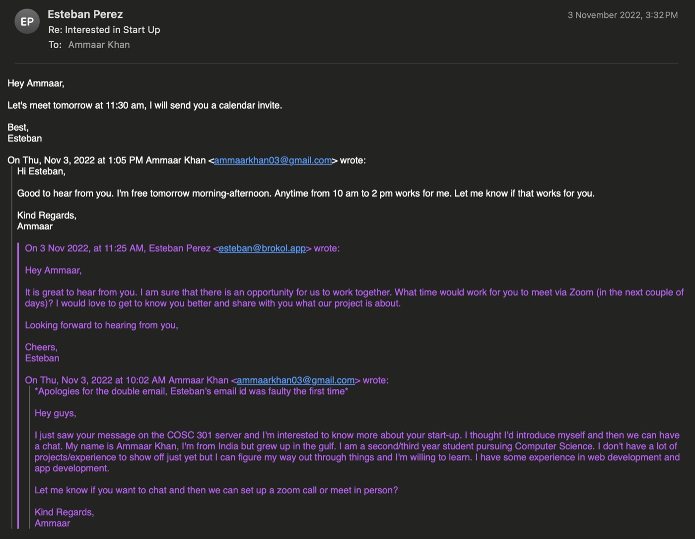
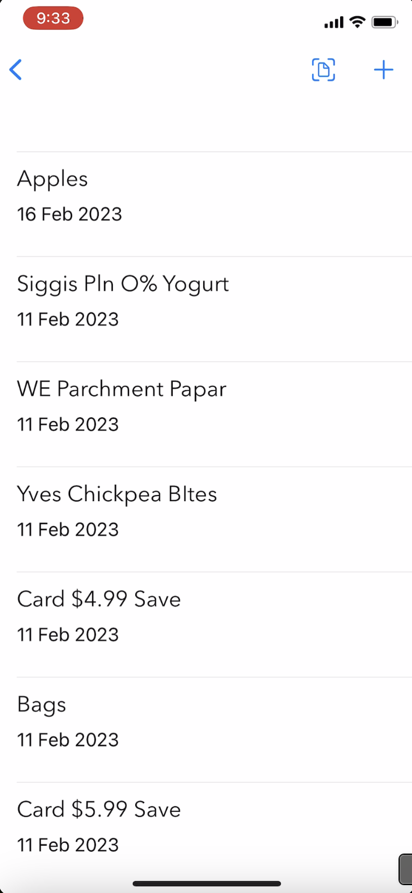
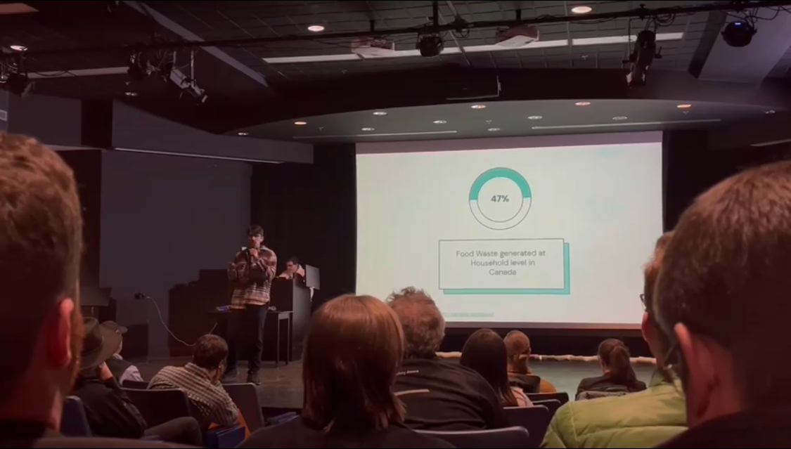
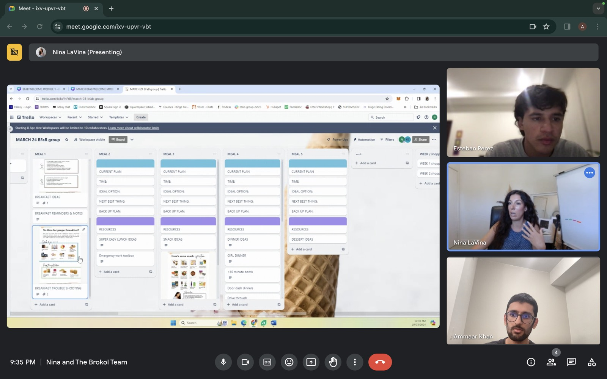
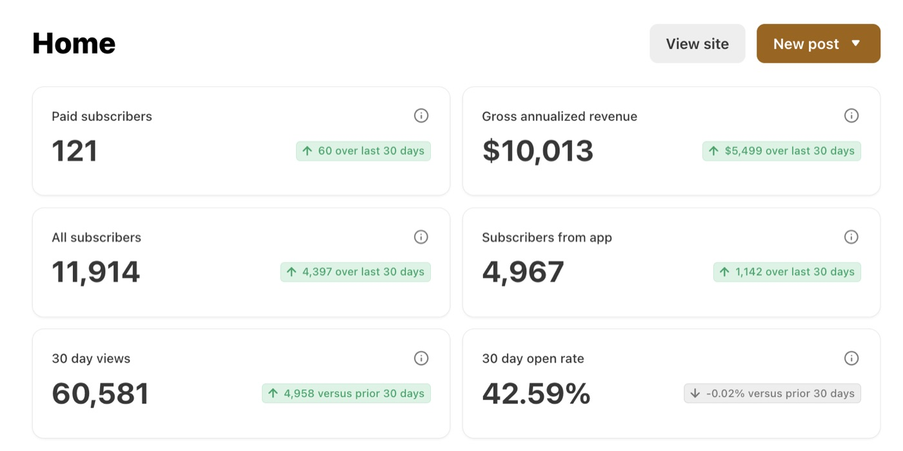
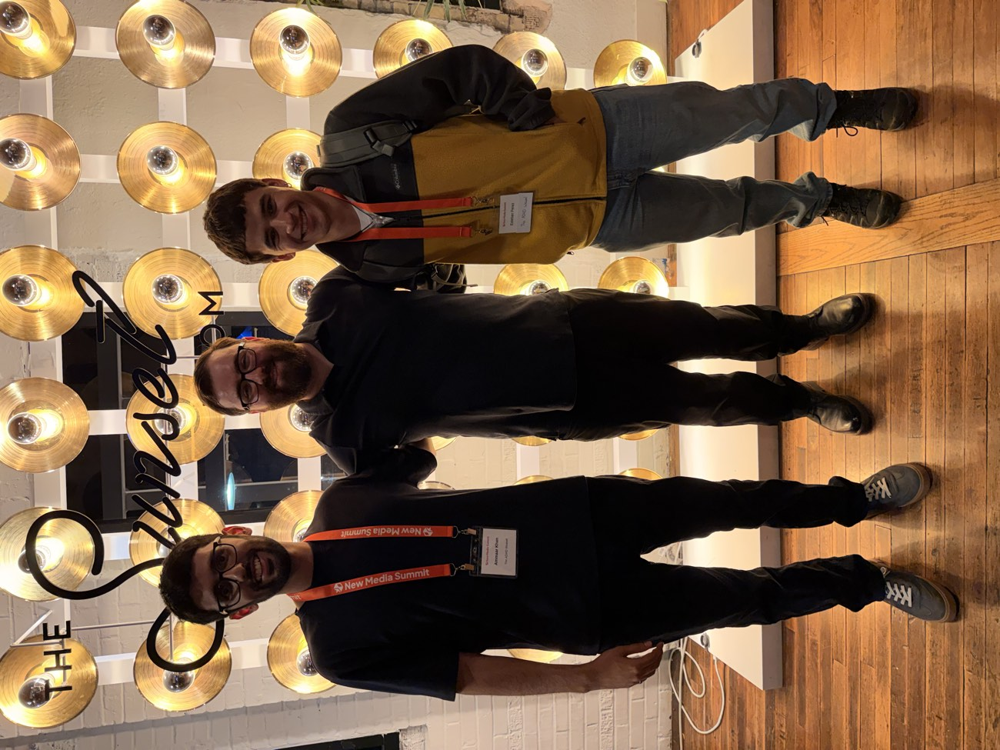
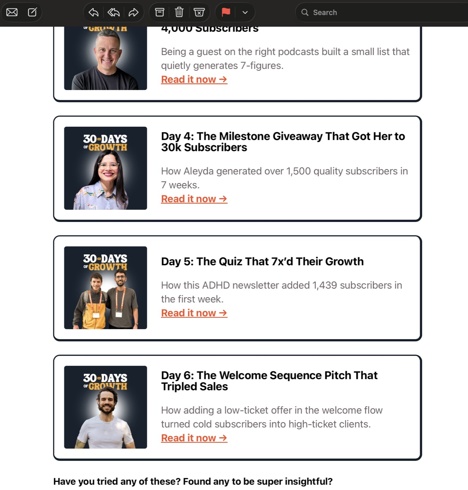
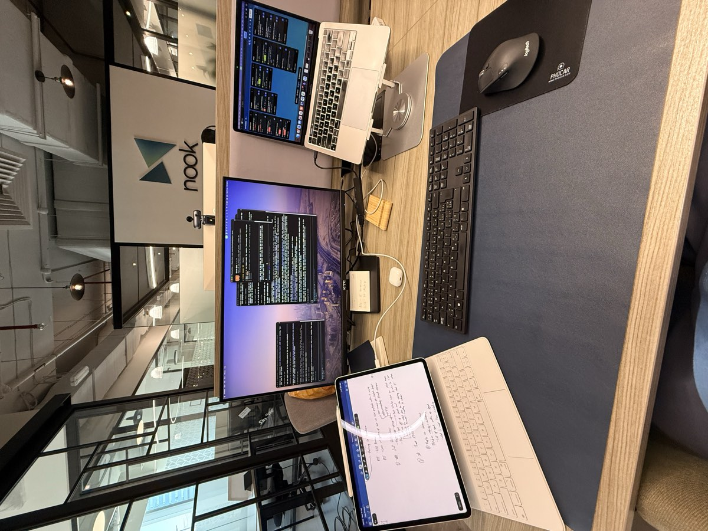

co-founder · the story
The ADHD Weasel
A weekly newsletter helping 36k+ late-diagnosed women understand the science behind ADHD and feel less alone.

how we got here
We started Brokol in November 2022 as a food waste app and spent a full year trying to build habits through inventory tracking, reminders, and smart lists. It helped some households, but the people who kept showing up were ADHDers bending the product into a coping system.
So we stopped guessing and spent the first half of 2024 listening. Conversations with ADHDers, nutritionists, coaches, and anyone who would trade stories taught us that food was only a symptom. Most had been diagnosed recently, nobody had explained the science to them, and so they blamed themselves for things their brain was always going to find hard.
That insight led to a lean ADHD-focused meal planner sprint that ran for five to six months. We charged for early prototypes and kept iterating with the same users. Nobody ever asked us to teach them anything. It sat underneath what they did say, and once we started reading it that way the planner stopped making sense. In June 2025 we dropped the remaining app surfaces and committed to The ADHD Weasel newsletter.
signals that matter
log
november 2022
The first email

december 2022
The prototype I refuse to delete
Built the receipt scanner in one night for a hackathon. It's scrappy, buggy, and the best reminder of the ground we've covered.

february 2023
First time presenting Brokol

march 2024
First call with an ADHD coach
Nina LaVina walked our team through the board she built for her clients, meal by meal, with a backup plan under every one. First time I watched someone treat food as an executive function problem.

july 2024
Summer of listening
Sat down with more than 200 ADHDers, plus nutritionists and coaches, to understand routines, setbacks, and what actually sticks. The gap in education was obvious, and it became the brief for whatever came next.
november 2024
Lean meal planner sprints
Spent five to six months running tight meal planner experiments. Charged for the earliest prototypes, iterated weekly, and learned that even paying users needed guidance more than yet another planning tool.
may 2025
First $10k of annual revenue
121 people were paying for the newsletter a month before we turned the app off. Small numbers, and the first real evidence that the writing was the thing people wanted.

june 2025
Newsletter becomes the product
Shut down the remaining app work and completely focused on The ADHD Weasel as a weekly newsletter.
october 2025
Esteban goes full time
Esteban moved to full time in October and started drawing real pay for it. We set a ladder for how the salaries would step up from there and worked through it over the following months, while I kept going part time around my last year of school.
january 2026
Actual hours, actual roles
Set real working hours and split the company properly: product and writing to me, marketing and social to Esteban. We had both been doing a bit of everything, which mostly meant neither of us owned anything.
february 2026
In the same room again
Esteban and I went to the New Media Summit together, the first time we had been in the same room in about two years.

april 2026
The quiz funnel gets written up
Chenell Basilio covered our quiz funnel in Growth In Reverse after we sent her what happened when we ran the idea from her summit talk, then featured it again as Day 5 of her 30 Days of Growth series.

may 2026
Full time, finally
Finished my degree at the end of April, moved to Dubai, and went full time on the newsletter in May.
